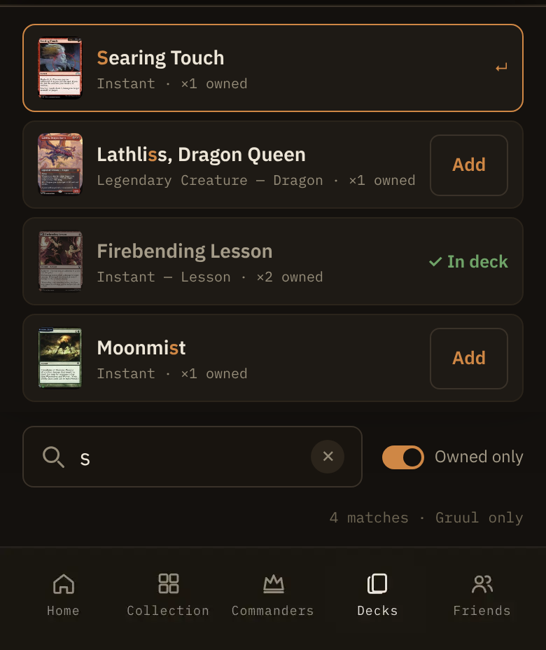
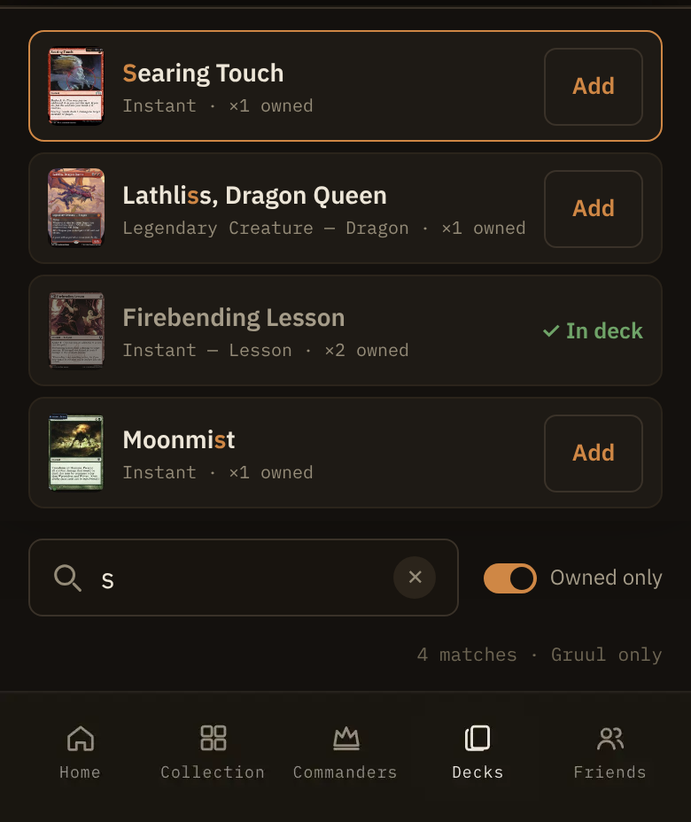

Hugh tested on a phone: tapping the first result opened its card details, and it added only with a tap right on the ↵. On a touchscreen the ↵ doesn't read as a button, so the most likely card was the hardest to add. Every frame here is the shipped quick-add bar rendered with the shipped CSS (Amonkhet theme) over the shipped deck page capture; the right-hand frames have this addendum's change applied.
Design calls
1px --border-strong, radius 7, --accent-text 13/600. The bare ↵ is gone.--accent border; the Add inside it stays the same as every other row's, so the most likely card looks exactly as addable as the rest.--elevated fill (the segmented switch's pressFill) and the --accent border (the ghost's hover border). Only on :active; no new token.✓ In deck at once (useDeckMutation's applied) and it holds while the add saves. A refusal puts Add back with the shipped error line. The shipped 0.5 dim on isPending never shows, since applied wins, so no separate pending look is drawn.✓ In deck in --success, aria-disabled, the name still opens the card.↵ add caption stays where a keyboard is likely: md and up with a fine pointer. A touch tablet at md gets the Add button too. The desktop render with this change is pixel-identical to main.
The first row, the one the keyboard's return adds, shows only a bare ↵.

Every row has the same Add. The brass edge still says which row is first.
↵ on phones
↵ becomes Add. The keyboard hint under the results (↑↓ to move · ↵ to add · Esc to dismiss) shows on phones today whenever the list is short enough to reach it; it hides on a coarse pointer.resolution-expander.tsx) draws the same bare ↵ on a phone's active option. Same problem, its own round if wanted. And on desktop the shipped ✓ In deck wraps to two lines in its 56 column; left as shipped.rowAdd “Add”, rowInDeck “✓ In deck”, rowAddActive “↵ add” (desktop only now). Spoken labels unchanged: the cell is still “Add” with the row's card as its description.